PairLingo
Bármilyen nyelvpár tanulása, a saját tempódban, a saját szavaiddal — nem egy sablon szókártya-app.
Learn any language pair, at your own pace, with your own words — not a template flashcard app.
iPhone-ra és iPadre · iOS 17 vagy újabb · ingyenes
For iPhone and iPad · iOS 17 or later · free
Amiben tényleg más
Nem egy újabb sablon szókártya-app — tizenhárom dolog, amiben a PairLingo tényleg különbözik.
What actually sets it apart
Not just another template flashcard app — thirteen things PairLingo genuinely does differently.
Valóban tetszőleges nyelvpár
Nem csak angol–magyar. Bármelyik két nyelvet kombinálhatod — spanyol–japán, német–orosz, vagy bármi mást, amit tanulsz.
Truly any language pair
Not just English–Hungarian. Combine any two languages — Spanish–Japanese, German–Russian, whatever you're learning.
Négyféle gyakorlás
Párosítás, ahol a helyes válasz ott van a képernyőn; gépelés, ahol magadnak kell előhívnod a fordítást; hallás, ahol a szót csak hallod, sosem látod kiírva; és kártyák, ahol megnézed a megoldást, majd magad értékeled négy fokozaton, mennyire ment — ez utóbbi vezérli legfinomabban az ismétlési ütemezést.
Four ways to practice
Matching, where the right answer is on screen; typing, where you recall the translation yourself; listening, where you only hear the word and never see it written; and flashcards, where you reveal the answer and rate on a four-step scale how well it went — the one that steers the review schedule most precisely.
Okos CSV-import
Felismeri, ha egy szó fordítása megváltozott, figyelmeztet a hasonló nevű duplikált csoportokra, és soronként rád bízza, mit tegyen az ütköző szavakkal.
Smart CSV import
Detects when a word's translation changed, warns about accidentally-duplicated groups, and lets you decide row by row how to resolve conflicts.
Fénykép alapú import
Fényképezz le egy nyomtatott szólistát — az app a készüléken ismeri fel belőle a csoportokat és szópárokat, a kép sosem kerül fel semmilyen szerverre.
Photo-based import
Photograph a printed word list — the app recognizes the groups and word pairs from it on your device, and the photo never gets uploaded anywhere.
Igazi adatvédelem
Nincs backend szerver, nincs fiókregisztráció, nincs hirdetés. A szavaid a saját iCloud-fiókodban szinkronizálódnak — a fejlesztőnek fizikai lehetősége sincs hozzáférni.
Real privacy
No backend server, no account, no ads. Your words sync through your own iCloud account — the developer has no technical way to access your data.
Valódi térközös ismétlés
Nem egy fix "hibás szavak" listát pörget — minden szóhoz saját ütemezést számol: a jól tudott szavakat egyre ritkábban, a nehezen menőket gyakrabban kérdezi vissza. Kártyás módban a négyfokozatú saját értékelésed még finomabban vezérli ezt. Az "Esedékes ismétlés" és a "Hibázott szavak" külön listában jelenik meg, hogy sose keveredjen a kettő, és egy félbehagyott kör sosem módosítja az ütemezést.
Real spaced repetition
Not a fixed "wrong words" bin — the app calculates its own schedule for each word: words you know well are asked less often, tricky ones come back sooner. In card mode, your own four-step rating steers this even more precisely. "Due for Review" and "Mistaken Words" show up as two separate lists, so the two are never conflated, and an abandoned round never changes the schedule.
Kiejtés-felolvasás
Koppints egy kártyára, és az app felolvassa a szót a nyelvének megfelelő kiejtéssel — eszközön, hálózat nélkül, ki- és bekapcsolható.
Spoken pronunciation
Tap a card to hear the word read aloud in its language's pronunciation — on-device, no network involved, and can be turned off.
Valódi többnyelvű felület
Nemcsak a tananyag — maga az alkalmazás kezelőfelülete is 6 nyelven érhető el, azonnal váltható, újraindítás nélkül.
A genuinely multilingual interface
Not just the content — the app's own interface is available in 6 languages, switchable instantly with no relaunch.
Kész alapszókészletek minden szinten
9 nyelvpárhoz — angol vagy magyar párosítva spanyollal, némettel, portugállal vagy olasszal —, mind a hat nyelvvizsga-szinten (A1–C2), bármikor importálható, bármelyik nyelvpárhoz.
Starter word lists at every level
For 9 language pairs — English or Hungarian paired with Spanish, German, Portuguese, or Italian — at all six CEFR levels (A1–C2), importable anytime, for any pair.
6 letisztult színtéma
Hat kézzel válogatott, matt színpaletta közül választhatsz — a helyes/hibás visszajelzés viszont mindig egyértelmű marad, bármelyiket is választod.
6 clean color themes
Pick from six hand-picked, matte color palettes — correct/incorrect feedback always stays unambiguous, whichever one you choose.
Napi gyakorlási sorozat
A statisztika mutatja az összes/megtanult/tanulandó szavaid számát, egy oszlopdiagramot az elmúlt hét napodról, a napi gyakorlási sorozatodat, és a csoportonkénti pontosságodat. Egy opcionális, tisztán helyi napi emlékeztető segít visszatérni — nincs mögötte szerver.
Daily practice streak
Stats show your total/learned/to-learn word counts, a bar chart of your last seven days, your daily practice streak, and your per-group accuracy. An optional, purely local daily reminder helps bring you back — no server behind it.
iPhone és iPad, egy appban
Univerzális app: iPaden minden tájolásban használható, a témakörök és az ismétlés-sorok a kijelző szélességéhez igazodó rácsba rendeződnek, a gyakorlóképernyők pedig nagyobb betűkkel jelennek meg. A szavaid iCloudon át szinkronban maradnak az eszközeid között.
iPhone and iPad, in one app
A universal app: on iPad it works in every orientation, topics and review rows flow into a grid that adapts to the screen width, and the practice screens use larger type. Your words stay in sync between your devices through iCloud.
Egy kis pók a társad
A kabala, egy kis narancs pók, hibátlan körnél ünnepel (hétféleképpen), egy tévesztés után pedig bátorít (négyféleképpen) — a pózok körbe-körbe váltakoznak, így nem ismétlik magukat.
A little spider by your side
The mascot, a little orange spider, celebrates a flawless round (in seven ways) and cheers you on after a slip (in four ways) — the poses rotate in a cycle, so they don't repeat.
Így néz ki
Témakörök, párosítás, az ünneplő kabala, ismétlés, kártyák példamondattal, hallás, fénykép alapú import, kezdő szókészletek és a haladásod egy pillantásra — iPhone-on és iPaden.
What it looks like
Topics, matching, the celebrating mascot, review, cards with example sentences, listening, photo-based import, starter lists and your progress at a glance — on iPhone and iPad.
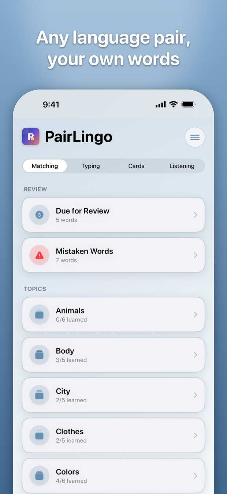
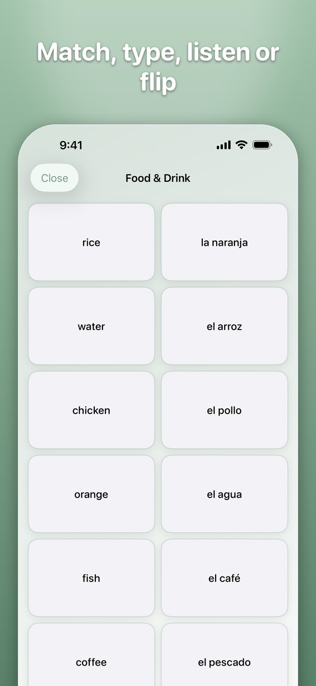
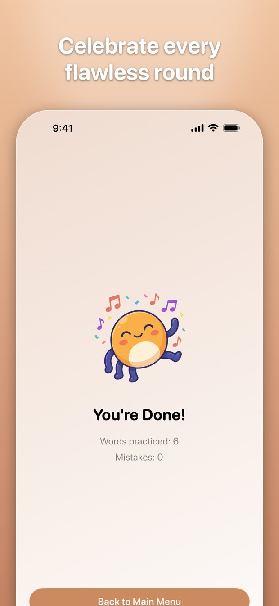
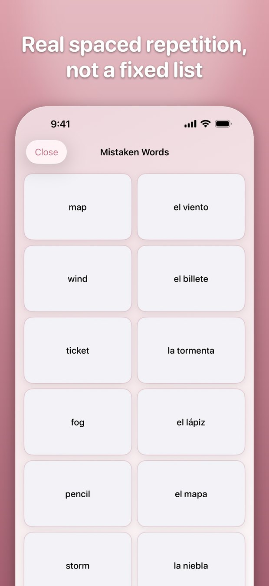
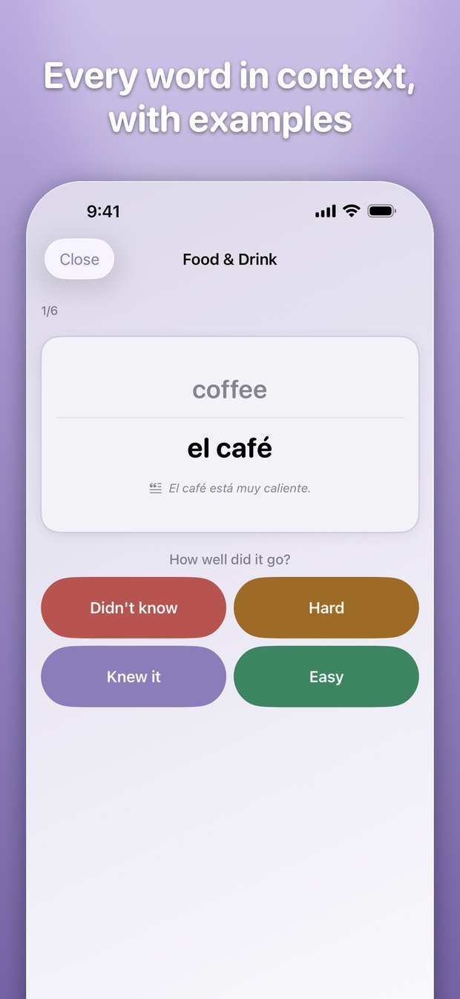
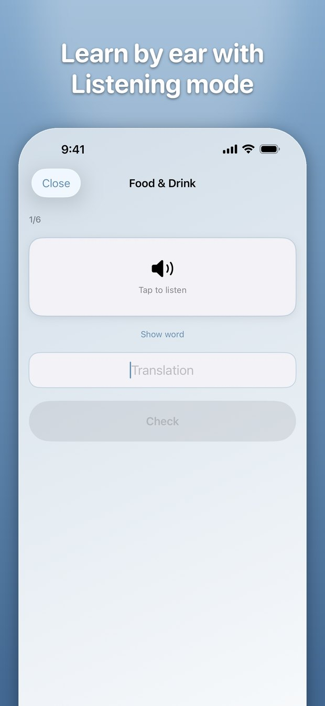
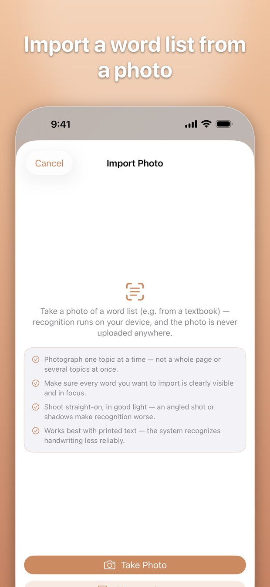
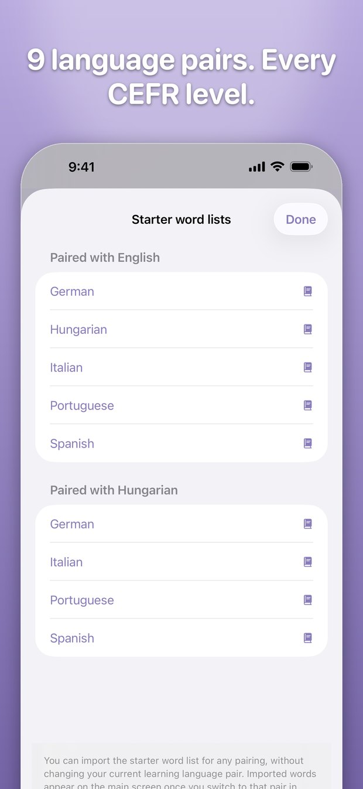
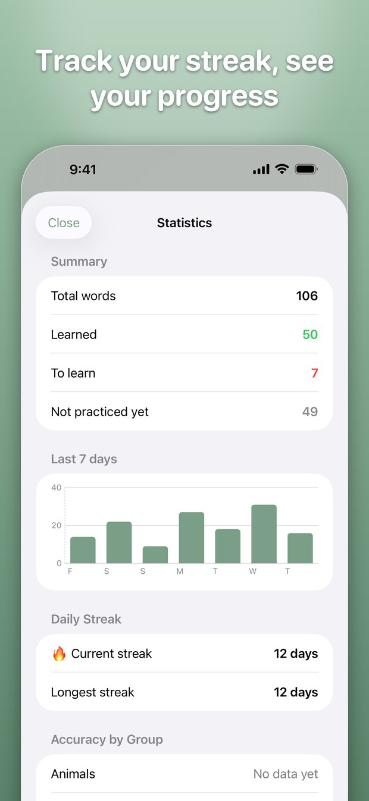
iPaden is
On iPad, too
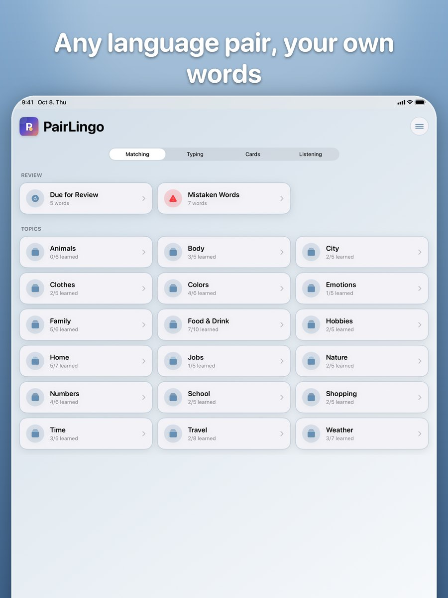
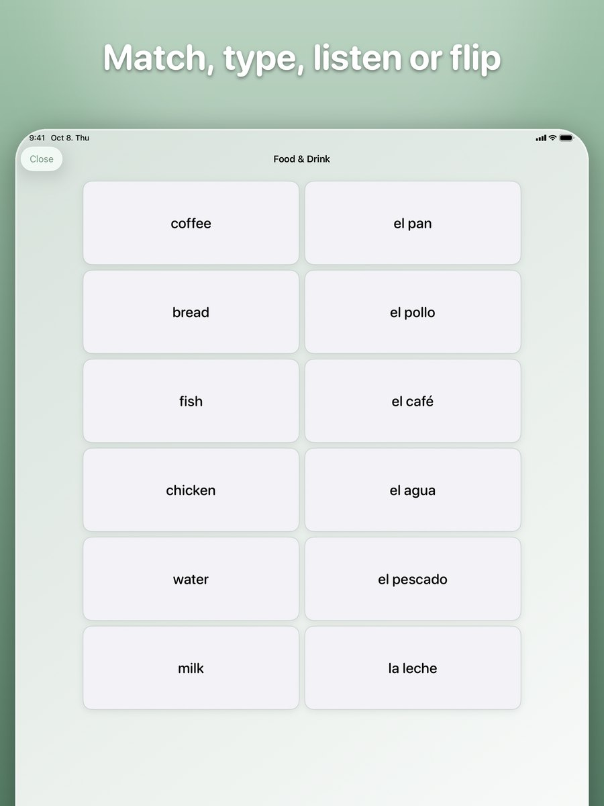
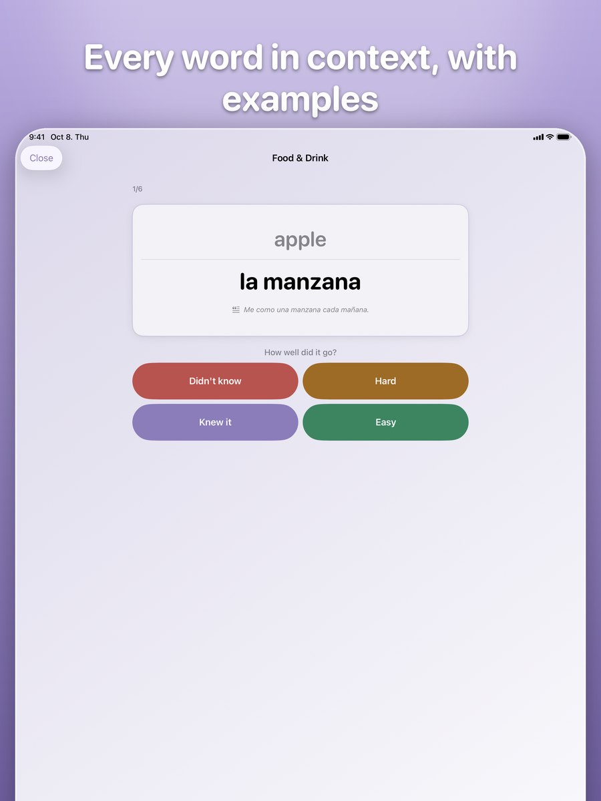
További funkciók
More features
- Opcionális példamondat bármelyik szóhoz — kézzel vagy CSV-importtal —, ami a megoldás megnézése után jelenik meg, hogy segítsen megjegyezni a szót kontextusban
- Beállítható kör-méret (4–10 szópár) és kérdezés-irány gépelésnél, hallásnál és kártyáknál
- Kézi szóhozzáadás, csoportkezelés (szerkesztés, törlés, átnevezés, összevonás)
- Beépített súgó
- Nyelvpár-alapú szűrés — semmilyen szavad nem vész el váltáskor
- Induláskori nyelvválasztó, ahol mindkét nyelvet szabadon kiválaszthatod, és rögtön látod, mely párokhoz van kész alapszókészlet
- Kezdő szókészlet importálása bármikor, bármelyik nyelvpárhoz, a jelenlegi váltása nélkül
- iCloud-szinkronizáció a saját eszközeid között, külön backend nélkül
- Pontos duplikátumok automatikus kihagyása importáláskor
- "Csoport(ok) lecserélése" import mód — a fájlból kimaradt szavak törlése az érintett csoportból
- Hasonló csoportnév felismerése — figyelmeztet elgépelés előtt, egy gombbal összevonható
- Minta CSV letölthető az import menüből, hogy könnyebben összeállítsd a saját szólistádat
- Témakör törlése és szavainak kezelése hosszú nyomással vagy balra húzással a főképernyőn
- iPaden többoszlopos témakör-rács minden tájolásban, nagyobb betűkkel
- Optional example sentence on any word — added by hand or via CSV import — shown once you've seen the answer, to help you remember the word in context
- Configurable round size (4–10 word pairs) and question direction for typing, listening, and cards
- Manual word entry, group management (edit, delete, rename, merge)
- Built-in help
- Language-pair based filtering — no words are ever lost when you switch
- A first-launch picker where you freely choose both languages, and immediately see which pairs have a ready-made starter list
- Import a starter word list anytime, for any pair, without switching away from your current one
- iCloud sync across your own devices, with no separate backend
- Exact duplicates automatically skipped on import
- "Replace group(s)" import mode — deletes words missing from the file in the affected group
- Similar group name detection — warns before a typo, mergeable with one tap
- Download a sample CSV from the import menu to help you put together your own word list
- Delete a topic or manage its words with a long press or a swipe to the left on the main screen
- On iPad, a multi-column topic grid in every orientation, with larger type